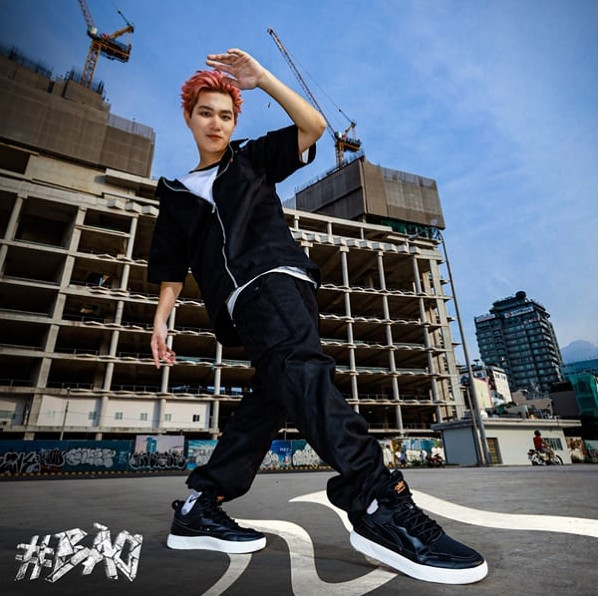

Có nên mang giày rộng hơn 1 size?
Trong khi đa số khách hàng của Biti’s luôn tìm kiếm cho mình những đôi sandal hay đôi giày vừa vặn với bàn chân, thì cũng có không ít khách hàng lại muốn mua giày với size rộng hơn 1 cỡ. Trước hết, chúng ta hãy cùng phân tích những lợi ích của việc mang giày rộng hơn 1 size mang lại như sau:
Tạo cảm giác thoải mái hơn
Mỗi người chúng ta không phải ai cũng có hình dạng và kích thước bàn chân giống nhau. Một số người có bàn chân rộng, bè sang hai bên thế nhưng lại có người có vùng ngón chân dài hơn so với bàn chân trung bình. Thế nên, trong trường hợp này, việc lựa chọn mua giày lớn hơn một size giúp đảm bảo sự thoải mái và không làm bí bách bàn chân.

Gây ảnh hưởng đến sức khỏe
Việc mang một đôi giày rộng hơn so với kích thước của bàn chân sẽ làm mất đi sự hỗ trợ và vững chắc mà giày mang lại, dẫn đến những tổn thương về đau nhức, bong gân, trật khớp,..do các đầu ngón chân phải dùng nhiều lực để giữ giày khi đi lại dẫn đến ngón chân bị chai sần.
Giày rộng sẽ khiến chân của bạn luôn có xu hướng trượt về phía trước, về lâu dài sẽ khiến các ngón chân bị khoằm, đau nhức. Các khớp xương và dáng đi cũng có phần bị thay đổi.
Ảnh hưởng tính thẩm mỹ và sự tự tin
Một chiếc giày quá to so với kích thước bàn chân, có thể làm cho bàn chân của bạn trông lớn hơn, không cân đối với cơ thể, làm mất đi tính thẩm mỹ, khó hết hợp với quần áo và không đẹp mắt.
Giày quá rộng khiến bạn mất đi sự tự tin vì tập trung quá nhiều vào phần đôi giày, phải đi đứng như thế nào để giày không bị tuột.
Dáng đi trở nên tập tễnh và kém sự tự tin, thu hút.
Thông qua những thông tin hữu ích mà Biti’s mang đến cho bạn bên trên, có thể thấy việc có nên mang giày rộng hơn 1 size hay không thì còn tùy thuộc vào nhiều yếu tố và từng trường hợp cụ thể. Thế nên, bạn cần xem xét cẩn thận, đảm bảo rằng sự thoải mái và hỗ trợ của đôi giày nào cho bàn chân bạn ổn nhất thì đó là đôi giày phù hợp nhất bằng cách truy cập website Bitis.com.vn. Biti's luôn có đội ngũ nhân viên chuyên nghiệp sẵn sàng tư vấn cho bạn về việc chọn size phù hợp nhất để đảm bảo bạn có được một trải nghiệm thời trang tốt nhất và bàn chân luôn được bảo vệ và thoải mái nhất trong mọi hoàn cảnh.
